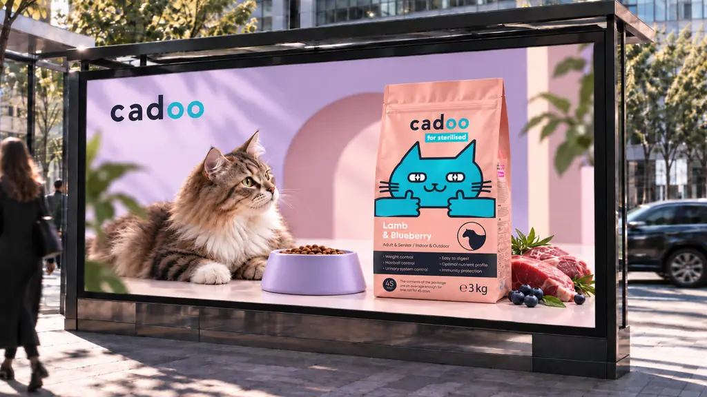
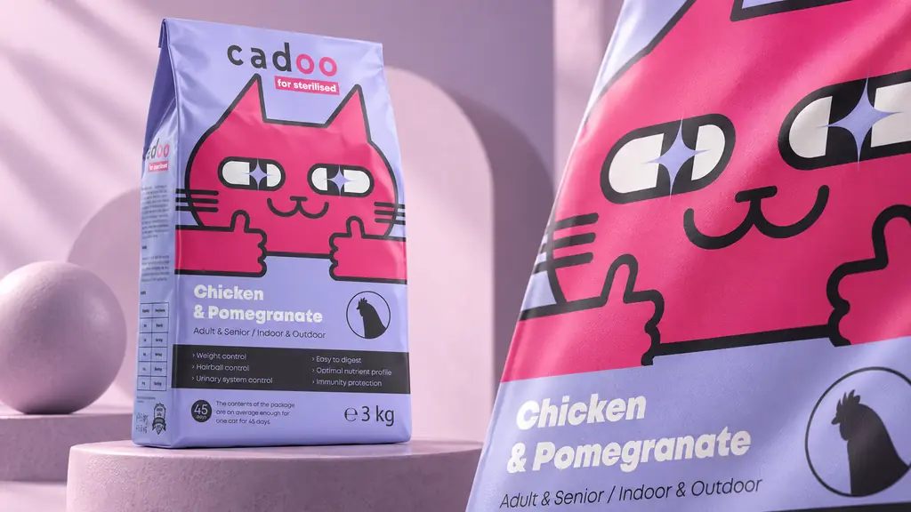
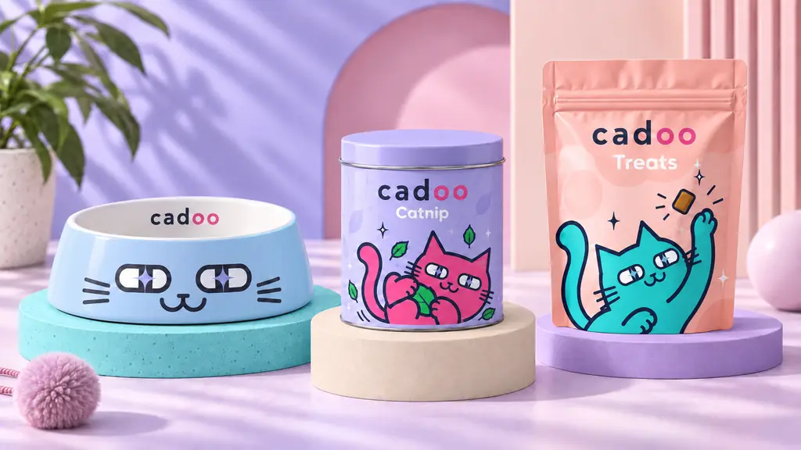
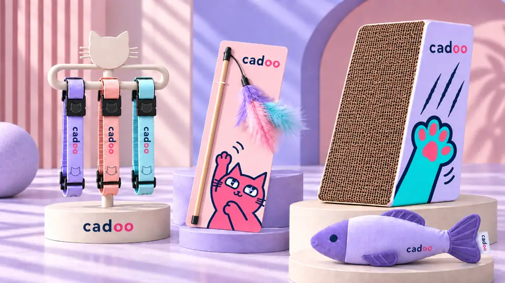
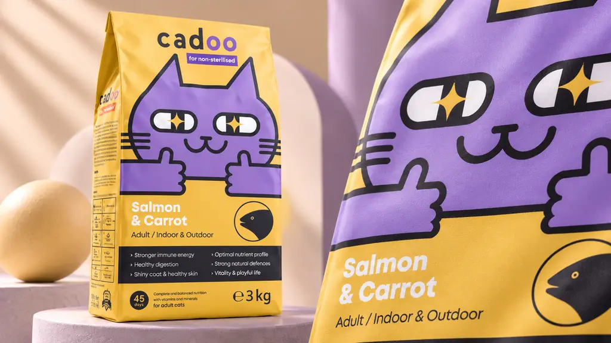
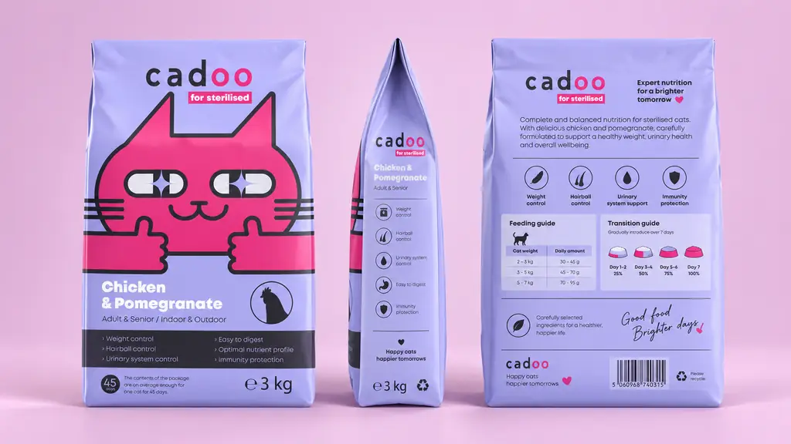
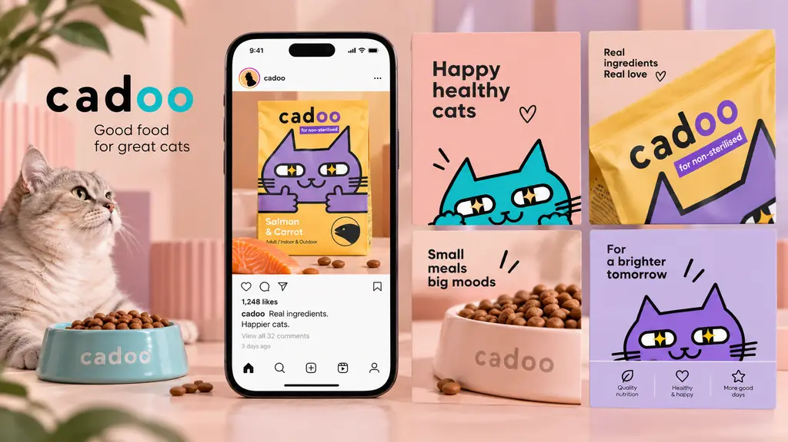
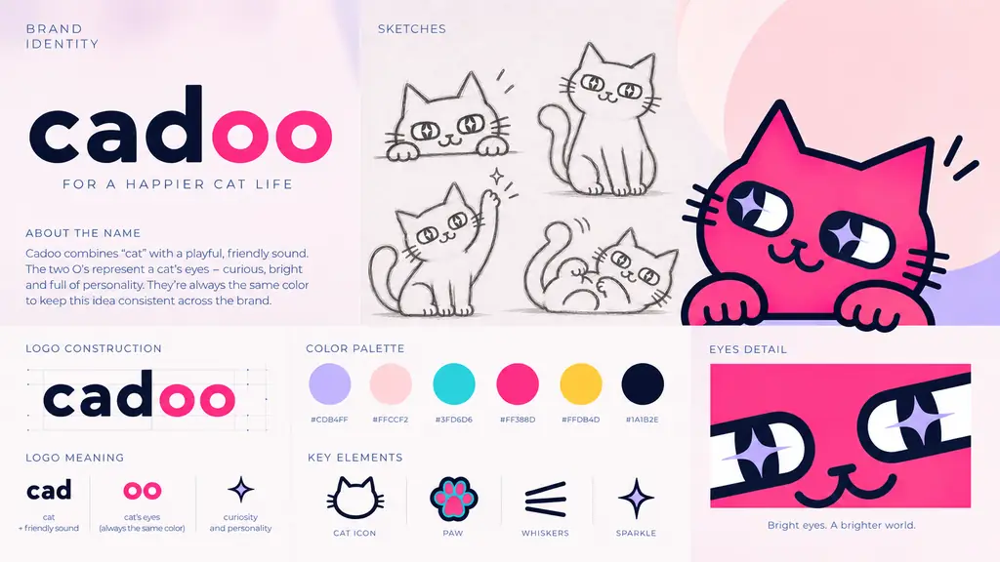
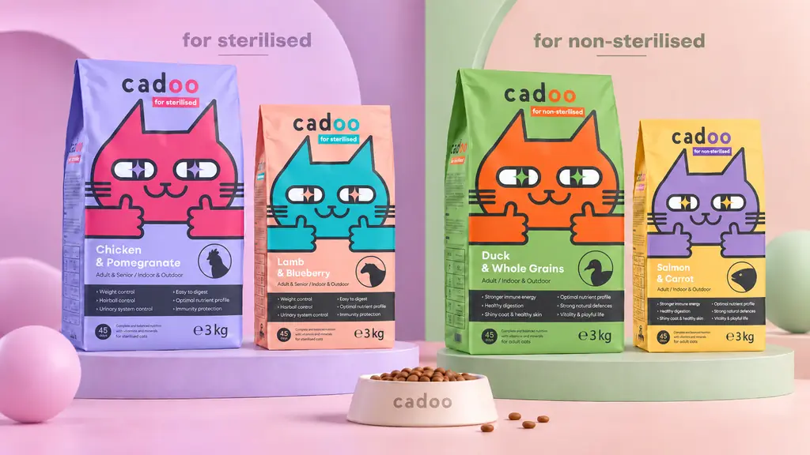

← Back to all work
Cadoo
- Duration
- Independent Brand Project
- What I did
- Art Direction · Brand Identity · Packaging · Visual System
- Scope
- Naming · Logo · Mascot · Packaging · Campaign Visuals · Social Media · Brand Applications
Project description
Cadoo is a complete cat-care brand identity built from the ground up, from naming and visual language to packaging, campaign imagery and brand applications. The system centers on a character-driven mascot and a flexible color architecture that allows product lines, flavours and formats to feel distinct while remaining unmistakably part of one brand.
I developed the creative direction, identity, packaging system and art direction across food, treats, accessories, social media and outdoor communication, creating a playful but commercially polished world designed to scale across physical and digital touchpoints.









